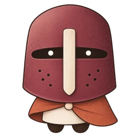
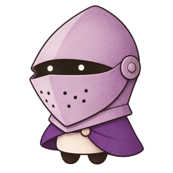
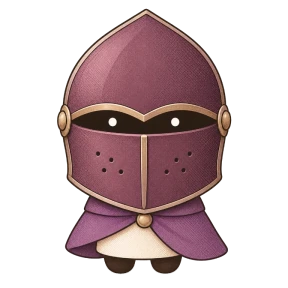
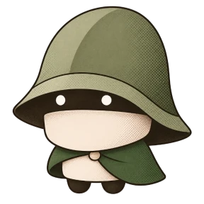
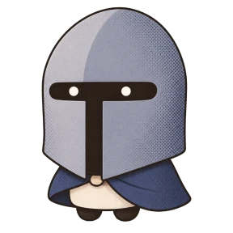
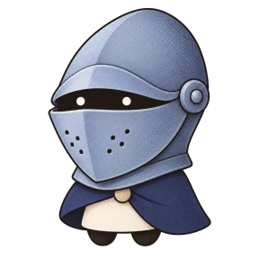
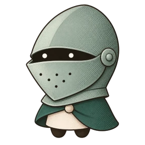
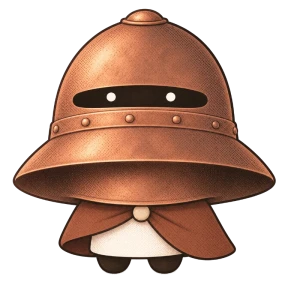

The knights
Each knight is one of the owner's ten drawings, the drawing itself cut out of its paper, with live eyes over the drawn ones; from apps/web/src/ui/avatar.ts and apps/web/src/knights/. Which one a knight is, it chooses (Edit knight, or galahad roundtable avatar <id> --look <name>); until it does, a knight called by a drawing's name is that drawing, and any other is one of the ten from its handle. Galahad is his own drawing, with his red cross; in beast mode he is the Black Knight. Every avatar is named for a screen reader: "Percival · working", or "Percival's avatar" beside something it said earlier, where it stays still.
The ten drawings








What a knight is doing, it shows
A state is never a mood. It is what the node says of the knight's work, by this rule, the first that holds. Only the mark that starts a task's latest line is read, never the words after it. Nothing moves when the device asks for reduced motion.
- thinking
- it is planning (its task's latest line starts “Plan ·” or “Thinking ·”), or writing you an answer: its eyes up
- working
- a command of its task is running (“Running ·”), or a step the others don't name: its eyes down at the work, moving along it
- reading
- it is reading what the command printed (“Exit N ·”): its eyes along the lines
- browsing
- it is using its desktop (“Running · desktop …”): its eyes after the pointer
- checking
- its gates are running, or its work is under review (“Gate i/n ·”, “Review ·”): its eyes back and forth
- asking
- it asks your leave for something (an approval waiting in the Inbox): wide eyes, and a red mark beside it
- resting
- it is paused: shut eyes, its colour drained
- waiting
- it has work queued: its eyes up and away
- concerned
- something of its failed or was interrupted in the last 30 seconds: lowered eyes
- pleased
- a task of its passed its checks in the last 30 seconds: happy eyes
- idle
- none of these: it blinks, and a curious or lively one glances about
Galahad in beast mode: the Black Knight
| 32 px | 56 px | 112 px | |
|---|---|---|---|
| thinking | |||
| working | |||
| reading | |||
| browsing | |||
| checking | |||
| asking | |||
| resting | |||
| waiting | |||
| concerned | |||
| pleased | |||
| idle | |||
| Galahad |
| 32 px | 56 px | 112 px | |
|---|---|---|---|
| thinking | |||
| working | |||
| reading | |||
| browsing | |||
| checking | |||
| asking | |||
| resting | |||
| waiting | |||
| concerned | |||
| pleased | |||
| idle | |||
| Galahad |